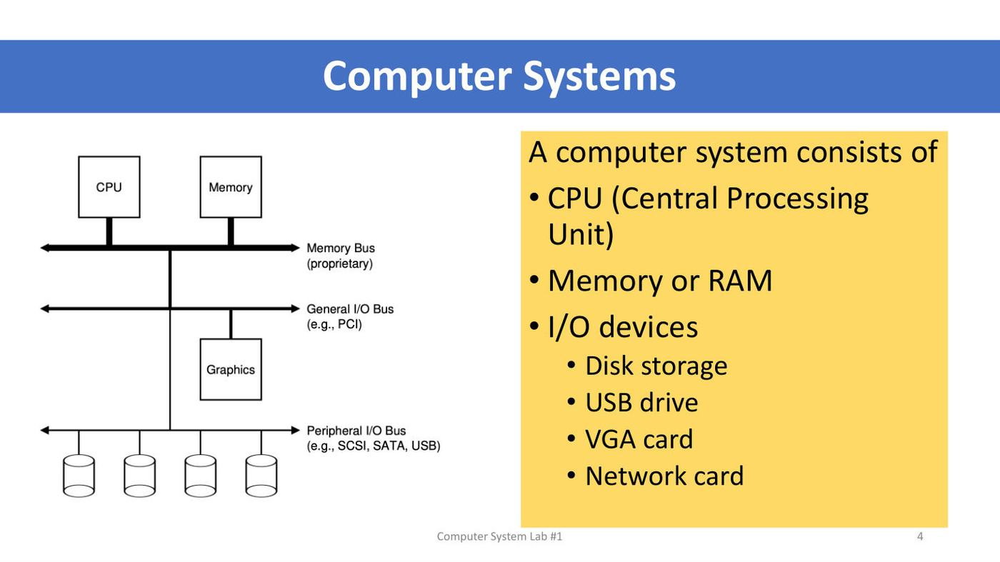
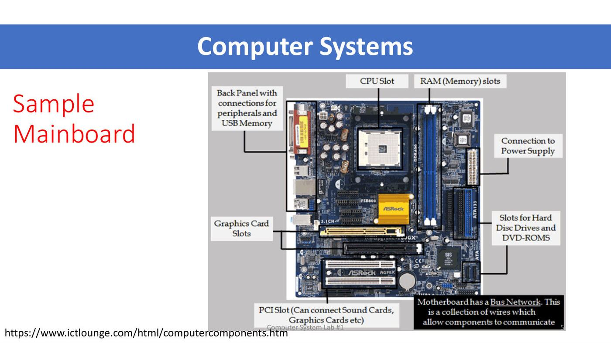
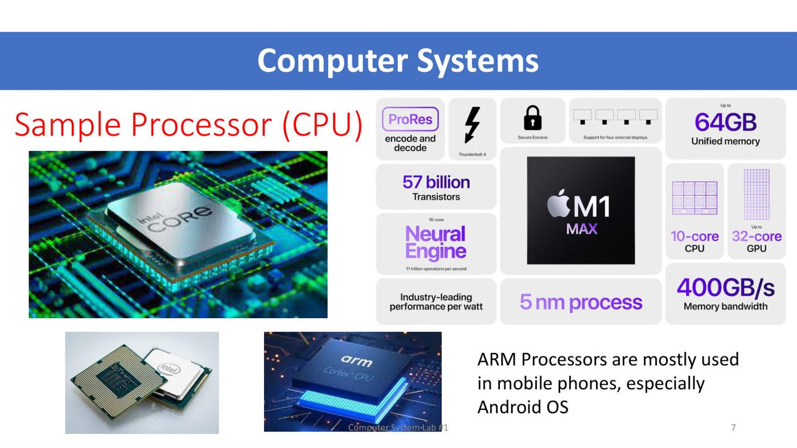
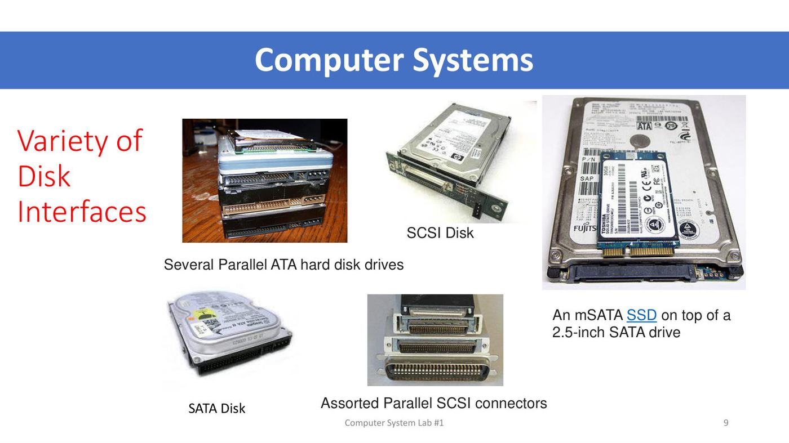
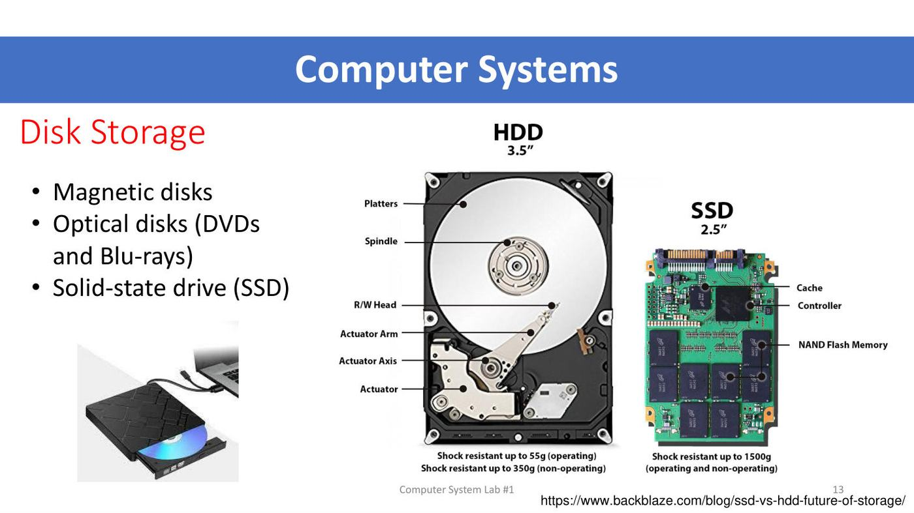
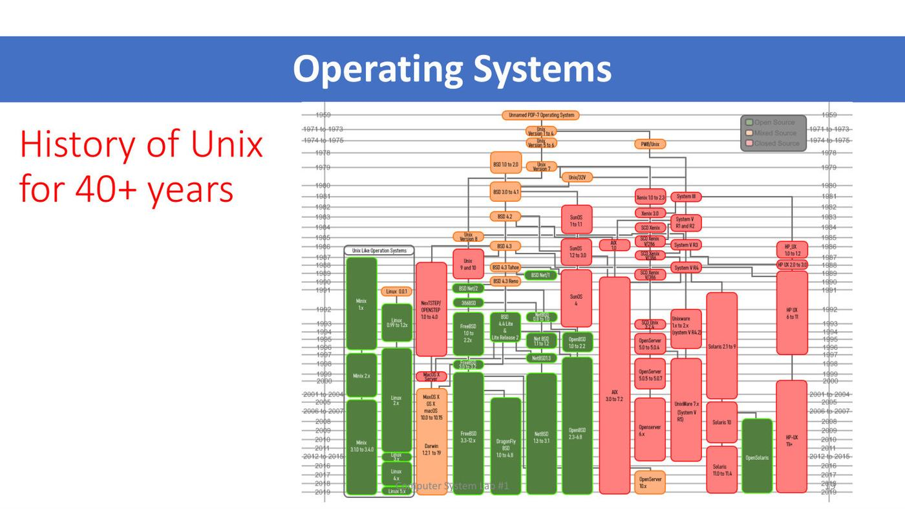
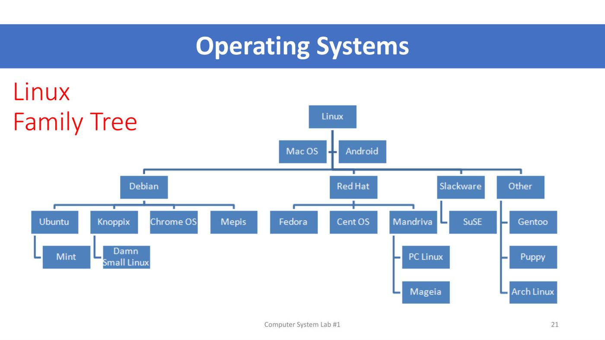
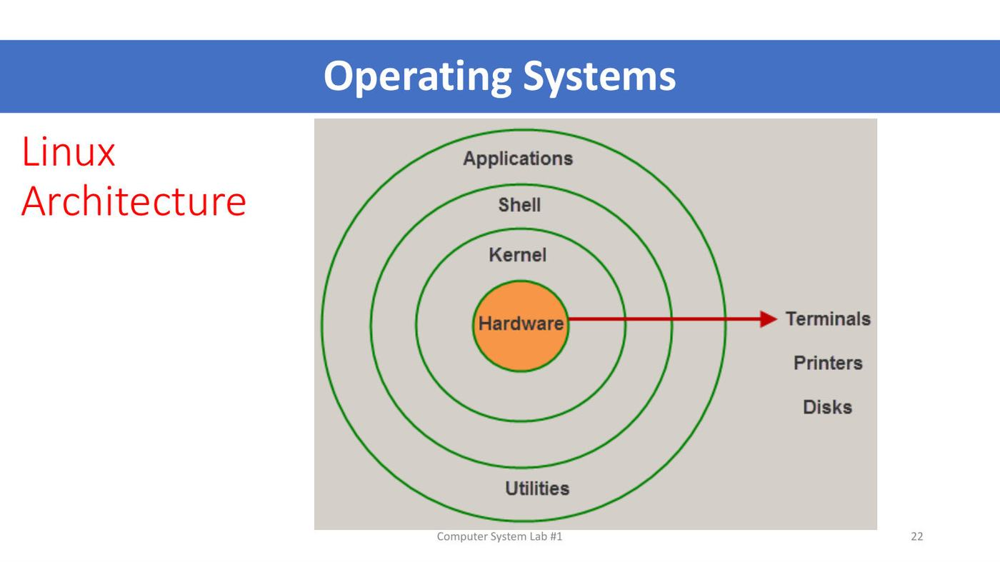
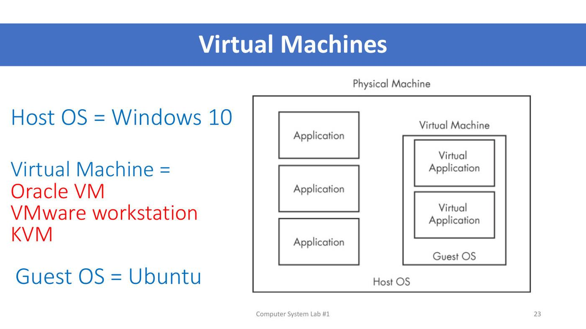

ภาพรวมบทนี้ สัปดาห์แรกของวิชา ITDS212 Computer System Lab มี 2 ส่วนที่ต่อกัน
(1) Lecture 1 ทบทวนว่าคอมพิวเตอร์ประกอบด้วยอะไร (CPU, RAM, I/O, storage) รู้จักระบบปฏิบัติการ ประวัติ Unix/Linux สถาปัตยกรรม Linux และแนวคิด virtual machine
(2) Lab 1 ลงมือติดตั้ง VirtualBox แล้วสร้าง VM ที่ติดตั้ง Ubuntu 22.04 ซึ่งเป็นเครื่องที่จะใช้ฝึกคำสั่ง Linux ไปตลอดทั้งเทอม
ถ้าเข้าใจว่า host OS / VM / guest OS คืออะไร และจำค่าที่ต้องตั้งตอนสร้าง VM ได้ ก็พร้อมสำหรับ Lab 2 เป็นต้นไป
ส่วนที่ 1 — Lecture 1: Computer Systems
1. ข้อมูลรายวิชา
ITDS212 Computer System Lab · ผู้สอน: รศ.ดร.สุดสงวน งามสุริยโรจน์ และ ดร. วรรณรัช สันติอมรทัต · Faculty of ICT, Mahidol University · เริ่ม 4 August 2026
Tentative Schedule (15 สัปดาห์)
| สัปดาห์ | หัวข้อ | สัปดาห์ | หัวข้อ |
|---|---|---|---|
| 1 | ระบบเครื่องคอมพิวเตอร์ + ติดตั้ง virtual machine และ Ubuntu OS | 9 | คำสั่งเกี่ยวกับ memory และการจัดการสภาพแวดล้อม |
| 2 | โครงสร้างระบบปฏิบัติการ Linux + คำสั่ง Linux เบื้องต้น | 10 | เขียน shell script |
| 3 | การจัดการแฟ้มข้อมูล (file) | 11 | เขียนโปรแกรมจัดการ process และ thread |
| 4 | การจัดการผู้ใช้และกลุ่มผู้ใช้ | 12 | ติดตั้ง Apache server, MySQL, PHP |
| 5 | สิทธิ์ของผู้ใช้ (permission) | 13 | ตรวจสอบระบบ (System monitoring) |
| 6 | nano และ vim editor | 14 | บริหารจัดการระบบปฏิบัติการ Linux |
| 7 | คำสั่งจัดการ storage | 15 | โครงสร้างและการบริหารจัดการ Windows |
| 8 | คำสั่งเกี่ยวกับ process |
💡 สังเกตว่าเกือบทั้งเทอมทำบน Linux (Ubuntu) ที่ติดตั้งใน Lab 1 ถ้า VM พังหรือลืมรหัสผ่าน จะทำแลปต่อไม่ได้
Evaluation and Grading Criteria
| วิธีการวัดผล | น้ำหนัก (%) | สัปดาห์ที่ประเมิน |
|---|---|---|
| การเข้าเรียน | ต้องเข้า 80% (attendance) | 1–15 |
| รายงานผลแลป | 25 | 1–15 |
| การทดสอบย่อย | 25 | 1–15 |
| การสอบกลางภาค | 25 | 9 |
| การสอบปลายภาค | 25 | 17 |
- ⚠️ ส่งรายงานแลปภายใน 23.59 น. ของวันที่เรียน (ส่งวันเดียวกัน)
- ⚠️ มีทดสอบย่อยทุกสัปดาห์ก่อนจบคาบ
2. Computer Systems: องค์ประกอบของคอมพิวเตอร์

A computer system consists of:
- CPU (Central Processing Unit) — หน่วยประมวลผล ทำงานตามคำสั่งของโปรแกรม
- Memory หรือ RAM — ที่เก็บข้อมูลและโปรแกรมที่กำลังทำงาน (หายเมื่อปิดเครื่อง)
- I/O devices — อุปกรณ์รับส่งข้อมูล:
- Disk storage — เก็บข้อมูลถาวร
- USB drive
- VGA card — การ์ดแสดงผล
- Network card — การ์ดเครือข่าย
Bus: ถนนที่เชื่อมทุกชิ้นเข้าด้วยกัน
แผนภาพในสไลด์แสดง bus 3 ระดับ:
| Bus | เชื่อมอะไร | ตัวอย่างในสไลด์ |
|---|---|---|
| Memory Bus (proprietary) | CPU ↔ Memory | เฉพาะของผู้ผลิต |
| General I/O Bus | อุปกรณ์ความเร็วสูง เช่น Graphics | PCI |
| Peripheral I/O Bus | อุปกรณ์ต่อพ่วงและดิสก์ | SCSI, SATA, USB |
💡 ทำไมต้องแยก bus หลายระดับ? (อธิบายเพิ่ม) CPU กับ RAM คุยกันถี่และต้องเร็วที่สุด จึงมี bus ของตัวเอง ส่วนอุปกรณ์ช้ากว่า (ดิสก์, USB) อยู่ bus ที่ไกลออกไป ถ้าให้ทุกอย่างใช้ bus เดียว อุปกรณ์ช้าจะถ่วงทั้งระบบ
3. Mainboard, CPU, Memory
Sample Mainboard (เมนบอร์ด)

| ส่วน | ใช้ทำอะไร |
|---|---|
| CPU Slot | ที่ใส่ CPU |
| RAM (Memory) slots | ที่ใส่แรม |
| Back Panel | ช่องต่ออุปกรณ์ต่อพ่วงและ USB memory |
| Connection to Power Supply | ต่อไฟจาก power supply |
| Graphics Card Slots | ใส่การ์ดจอ |
| PCI Slot | ใส่การ์ดเพิ่ม เช่น sound card, graphics card |
| Slots for Hard Disc Drives and DVD-ROMs | ต่อสายดิสก์และไดรฟ์ |
สไลด์ระบุว่า "Motherboard has a Bus Network" = ชุดสายไฟที่ทำให้ชิ้นส่วนต่าง ๆ สื่อสารกันได้ (เมนบอร์ดคือที่อยู่ของ bus ในหัวข้อ 2)
Sample Processor (CPU)

- ตัวอย่างในสไลด์: Intel Core, Apple M1 Max และ ARM (Cortex CPU)
- สเปก M1 Max ในสไลด์: 57 billion transistors, 10-core CPU, 32-core GPU, 16-core Neural Engine, 64GB unified memory, 400GB/s memory bandwidth, 5 nm process
- ⭐ ARM processors ใช้มากในมือถือ โดยเฉพาะ Android OS (ประหยัดพลังงาน)
Sample Memory
- หน่วยความจำแบบ DDR SDRAM = "Double Data Rate Synchronous Dynamic Random-Access Memory"
- รุ่นต่าง ๆ: DDR → DDR2 → DDR3 → DDR4 → DDR5 SDRAM
💡 (อธิบายเพิ่ม) Double Data Rate = ส่งข้อมูล 2 ครั้งต่อ 1 จังหวะ clock จึงเร็วกว่า SDRAM ธรรมดาเท่าตัว · แต่ละรุ่นเสียบสลับกันไม่ได้ เพราะร่องบากบนแผงต่างกัน
4. Disk Interfaces และ Storage
Variety of Disk Interfaces
"interface" = รูปแบบสายและขั้วต่อที่ใช้เชื่อมดิสก์กับเครื่อง

| Interface | จากสไลด์ |
|---|---|
| Parallel ATA (PATA / IDE) | Several Parallel ATA hard disk drives |
| SCSI | SCSI Disk + Assorted Parallel SCSI connectors (ขั้วต่อหลายแบบ) |
| SATA | SATA Disk |
| mSATA | An mSATA SSD on top of a 2.5-inch SATA drive (SSD ขนาดเล็กเทียบกับดิสก์ 2.5 นิ้ว) |
| ST-506 | ดิสก์รุ่นเก่า ต่อกับ controller card ด้วย data cable (บน) และ control cable (ล่าง) |
| IDE | IDE hard disk ต่อกับ IDE disk controller ด้วยสายเฉพาะ |
- ⭐ ประเด็นที่สไลด์ ST-506 และ IDE ต้องการชี้: ดิสก์ต้องทำงานคู่กับ disk controller ซึ่งเป็นตัวกลางระหว่างดิสก์กับเครื่อง
💡 (อธิบายเพิ่ม) Parallel (PATA, Parallel SCSI) = ส่งหลายบิตพร้อมกันผ่านสายแพกว้าง ๆ · Serial (SATA) = ส่งทีละบิตแต่เร็วมาก สายเล็ก ปัจจุบันเครื่องทั่วไปใช้ SATA และ NVMe แทน IDE แล้ว
Tape Storage
- เทป (reel, cassette, cartridge) เป็นสื่อเก็บข้อมูลแบบเก่า (อธิบายเพิ่ม: ยังใช้สำรองข้อมูลปริมาณมากในองค์กรเพราะราคาถูกต่อ GB แต่อ่านแบบเรียงลำดับ จึงช้า)
Disk Storage — 3 แบบ

- Magnetic disks — ฮาร์ดดิสก์ (HDD) เก็บข้อมูลด้วยแม่เหล็ก
- Optical disks — DVDs และ Blu-rays อ่านด้วยแสงเลเซอร์
- Solid-state drive (SSD) — เก็บใน NAND flash memory ไม่มีชิ้นส่วนเคลื่อนไหว
| HDD 3.5" | SSD 2.5" | |
|---|---|---|
| ส่วนประกอบ | Platters, Spindle, R/W Head, Actuator Arm, Actuator Axis, Actuator | Cache, Controller, NAND Flash Memory |
| ทนแรงกระแทก | 55g ขณะทำงาน / 350g ขณะไม่ทำงาน | 1500g ทั้งขณะทำงานและไม่ทำงาน |
ส่วนประกอบของ hard drive (Britannica): spindle, disk, saved file, actuator, arm, read/write head, power port, data cable port, drive configuration port, circuit board
💡 (อธิบายเพิ่ม) ทำไม SSD ทนกว่า? HDD มีหัวอ่านลอยอยู่เหนือจานที่หมุน ถ้ากระแทกตอนทำงาน หัวอาจขูดจาน ส่วน SSD เป็นชิปล้วน ไม่มีอะไรขยับ
5. I/O Interfaces และ USB
I/O Interfaces
- VGA card (Video Graphics Adapter) — การ์ดแสดงผล
- Network card — การ์ดเครือข่าย มีช่อง LAN (RJ-45)
USB Interfaces (Universal Serial Bus)
| Standard | ปี | Maximum transfer rate |
|---|---|---|
| USB 1.0 | 1996 | 12 Mbps |
| USB 1.1 | 1998 | 12 Mbps |
| USB 2.0 | 2001 | 480 Mbps |
| USB 2.0 Revised | – | 480 Mbps |
| USB 3.0 | 2008 | 5 Gbps |
| USB 3.1 | 2013 | 10 Gbps |
| USB 3.2 | 2017 | 20 Gbps |
| USB4 | 2019 | 40 Gbps |
ขั้วต่อ (connector):
- Type A — ใช้ตั้งแต่ USB 1.0 ถึง 3.x (3.0 เป็นแบบ SuperSpeed) · Deprecated ใน USB 3.2 / USB4
- Type B — ใช้ถึง 3.x · Deprecated ใน USB 3.2 / USB4
- Type C — ไม่มีใน USB 1.x · ใช้ได้ตั้งแต่ USB 2.0 revised ขึ้นไป และเป็นแบบเดียวที่ใช้ใน USB 3.2 และ USB4
⚠️ Mbps กับ Gbps ต่างกัน 1,000 เท่า: USB 2.0 = 480 Mbps ส่วน USB 3.0 = 5 Gbps (≈ 10 เท่าของ 2.0)
6. Operating Systems
ตัวอย่าง OS ในสไลด์
Windows, Linux, Mac OS, VMS, Apple (iOS/macOS), Android, Ubuntu, UNIX, IBM
(อธิบายเพิ่ม) OS คือซอฟต์แวร์ที่จัดการฮาร์ดแวร์ทั้งหมดในหัวข้อ 2–5 และให้บริการโปรแกรมอื่น เช่น จัดสรร CPU ให้ process, จัดการหน่วยความจำ, จัดการไฟล์บนดิสก์
History of Microsoft Windows
| ปี | เวอร์ชัน |
|---|---|
| 1985–1994 | Windows 1.x–3.x |
| 1995 | Windows 95 |
| 1998 | Windows 98 |
| 2000 | Windows 2000 |
| 2001 | Windows XP |
| 2006 | Windows Vista |
| 2009 | Windows 7 |
| 2012 | Windows 8 |
| 2015 | Windows 10 |
7. History of Unix และ Linux
History of Unix — for 40+ years

แผนผังในสไลด์ไล่ตั้งแต่ 1969 (Unnamed PDP-7 operating system) → Unix Version 1–7 → แตกเป็นสาย BSD (FreeBSD, NetBSD, OpenBSD, Darwin/macOS), สาย System V / commercial Unix (SunOS/Solaris, AIX, HP-UX, Xenix, OpenServer) และสาย Unix-like (Minix, Linux)
- ใช้สีแบ่ง: เขียว = Open Source, ส้ม = Mixed/Shared Source, แดง = Closed Source
💡 จำภาพรวม: Unix เกิดปี 1969 แล้วแตกออกเป็นหลายตระกูล Linux ไม่ได้มาจากโค้ด Unix โดยตรง แต่เป็น Unix-like (ทำงานเหมือน Unix) และเป็น open source
History of Linux (timeline)
| ปี | เหตุการณ์ |
|---|---|
| 1991 | First Linux code released (Linus Torvalds) |
| 1992 | Linus licenses Linux under the GPL — การตัดสินใจสำคัญที่ทำให้ Linux ประสบความสำเร็จ |
| 1993 | Slackware เป็น distribution แรกที่คนใช้กันแพร่หลาย |
| 1996 | Linus ไปเที่ยวพิพิธภัณฑ์สัตว์น้ำแล้วโดนเพนกวินกัด จึงเลือกเพนกวิน (Tux) เป็นมาสคอต |
| 1998 | บริษัทยักษ์ใหญ่ (tech giants) เริ่มประกาศรองรับ Linux |
| 1999 | Red Hat เข้าตลาดหุ้น (goes public) |
| 2003 | IBM ลงโฆษณา Linux ช่วง Super Bowl |
| 2005 | Linux ขึ้นปก Business Week |
| 2007 | ก่อตั้ง The Linux Foundation เพื่อส่งเสริมและทำมาตรฐาน Linux |
| 2010 | Android (ที่ใช้ Linux) ขายแซง smartphone OS อื่นในสหรัฐฯ |
| 2011 | Linux ครบ 20 ปี และเป็นหัวใจของ supercomputer, มือถือ, ATM ทั่วโลก |
⚠️ GPL (GNU General Public License) (อธิบายเพิ่ม) = สัญญาอนุญาตที่ให้ใครก็ใช้ แก้ และแจกจ่ายได้ แต่ถ้าแจกต่อต้องเปิดซอร์สด้วย นี่คือเหตุผลที่ Linux เติบโตจากชุมชนได้
8. Linux Family Tree

Distribution (distro) = Linux ที่รวม kernel กับโปรแกรมต่าง ๆ พร้อมใช้ แต่ละตระกูลแตกสาขาออกไป:
| ตระกูล | distro ลูก |
|---|---|
| Debian | Ubuntu (→ Mint), Knoppix (→ Damn Small Linux), Chrome OS, Mepis |
| Red Hat | Fedora, CentOS, Mandriva (→ PC Linux, Mageia) |
| Slackware | SuSE |
| Other | Gentoo, Puppy, Arch Linux |
- สไลด์วาด Mac OS และ Android ไว้ใต้ Linux ด้วย
- ⭐ Ubuntu ที่ใช้ในวิชานี้อยู่ในตระกูล Debian
⚠️ (ข้อสังเกต ไม่ได้มาจากสไลด์) ในความจริง Android ใช้ Linux kernel แต่ Mac OS ไม่ใช่ Linux (macOS มาจาก Darwin/BSD ในแผนผัง Unix หัวข้อ 7) ถ้าข้อสอบถามตามสไลด์ให้ตอบตามสไลด์ แต่ควรรู้ข้อเท็จจริงนี้ไว้
9. Linux Architecture ⭐

Linux จัดเป็นชั้นวงกลมซ้อนกัน จากในสุดออกนอก:
| ชั้น | หน้าที่ | ตัวอย่าง (อธิบายเพิ่ม) |
|---|---|---|
| Hardware (แกนกลาง) | อุปกรณ์จริง ต่อออกไปยัง Terminals, Printers, Disks | CPU, RAM, ดิสก์ |
| Kernel | หัวใจของ OS คุมฮาร์ดแวร์โดยตรง จัดการ process, memory, file, device | Linux kernel |
| Shell | ตัวแปลคำสั่งจากผู้ใช้ส่งไปให้ kernel | bash (ที่พิมพ์ใน Terminal) |
| Applications / Utilities (ชั้นนอก) | โปรแกรมที่ผู้ใช้ใช้งาน | ls, cp, Firefox, text editor |
💡 เปรียบเทียบร้านอาหาร (อธิบายเพิ่ม): ลูกค้า (ผู้ใช้/application) สั่งอาหารกับพนักงานรับออเดอร์ (shell) พนักงานส่งต่อให้เชฟ (kernel) ซึ่งเป็นคนเดียวที่ใช้เตาและวัตถุดิบ (hardware) ได้โดยตรง
⭐ ใน Lab 1 ตอนเปิด Terminal แล้วพิมพ์
lsคือการคุยกับ shell ซึ่งเรียก utilitylsให้ kernel อ่านรายชื่อไฟล์จากดิสก์
10. Virtual Machines ⭐⭐

| คำ | ความหมาย | ในห้องเรียนนี้ |
|---|---|---|
| Physical Machine | เครื่องจริง | คอมพิวเตอร์ในแลป / โน้ตบุ๊ก |
| Host OS | OS ที่ติดตั้งบนเครื่องจริง | Windows 10 |
| Virtual Machine (software) | โปรแกรมจำลองเครื่องคอมพิวเตอร์ขึ้นมาอีกเครื่อง | Oracle VM (VirtualBox), VMware Workstation, KVM |
| Guest OS | OS ที่ติดตั้งใน VM | Ubuntu |
- ในแผนภาพ: บน host OS มี Application ทั่วไปหลายตัว และมี Virtual Machine อีกตัว ซึ่งข้างในมี Guest OS และ Virtual Application ของมันเอง
💡 ทำไมเรียนผ่าน VM? (อธิบายเพิ่ม) ได้ใช้ Linux จริงโดยไม่ต้องลบ Windows · ถ้าพิมพ์คำสั่งผิดจนระบบพัง ก็พังแค่ VM ไม่กระทบเครื่องจริง · ย้ายหรือสร้างใหม่ได้ง่าย
⚠️ host vs guest สลับกันบ่อย: host = เจ้าบ้าน (เครื่องจริง, Windows) / guest = แขก (อยู่ใน VM, Ubuntu)
ส่วนที่ 2 — Lab 1: VirtualBox and Ubuntu
11. วัตถุประสงค์และสิ่งที่ต้องส่ง
Objectives
- Install VirtualBox
- Install Virtual Machine with Ubuntu (one of Linux flavors = distro หนึ่งของ Linux)
- Setting up parameters during installation
- Login/Logout to Ubuntu VM
- Exit and Shutdown Ubuntu VM
What to Submit
- แคปหน้าจอทุกขั้นตอนตั้งแต่ติดตั้ง VirtualBox และ Ubuntu จนจบแลป (ใช้ Snipping Tool ได้)
- รวมเป็น PDF ไฟล์เดียว ส่งที่ลิงก์บน MyCourses
- ชื่อไฟล์:
6887xxx_lab1.pdf - ⚠️ กำหนดส่ง: วันเดียวกัน (Tuesday, August 4) ก่อนเที่ยงคืน
- ⚠️ Quiz แรกทำวันเดียวกัน ตอนท้ายคาบ
12. ติดตั้ง / ถอน VirtualBox
ตรวจก่อนว่ามีอยู่แล้วไหม
- เปิด Control Panel → Programs and Features ดูรายชื่อโปรแกรม
- ถ้ามี Oracle VM VirtualBox อยู่แล้ว ข้ามขั้นติดตั้งได้
- ถอนการติดตั้ง (Uninstalling a Program): เลือกโปรแกรมใน Programs and Features → กด Uninstall → ยืนยัน Yes
ติดตั้ง VirtualBox
- ดาวน์โหลดที่ https://www.virtualbox.org/wiki/Downloads → เลือก Windows hosts (เพราะ host OS เป็น Windows) · ⭐ ขอให้ใช้ version ล่าสุด (ในภาพเป็น 6.1.36)
- เปิดไฟล์
.exe→ Welcome to the Setup Wizard → Next - Custom Setup → ใช้ค่าเริ่มต้น (VirtualBox Application, USB Support, Networking, Python) → Next
- Warning: Network Interfaces — การติดตั้งจะรีเซ็ตการเชื่อมต่อเครือข่ายและตัดเน็ตชั่วคราว → กด Yes
- รอแถบติดตั้ง → installation is complete → กด Finish (ติ๊ก Start VirtualBox after installation ไว้)
💡 (อธิบายเพิ่ม) ที่เน็ตหลุดตอนติดตั้ง เพราะ VirtualBox สร้าง network adapter เสมือนขึ้นมา เพื่อให้ VM ออกอินเทอร์เน็ตผ่านเครื่อง host ได้
ดาวน์โหลด Ubuntu
- ดาวน์โหลดจาก ubuntu.com/download/desktop (หน้าเว็บตอนนี้แสดง Ubuntu 24.04 LTS)
- ⭐ วิชานี้ใช้ Ubuntu 22.04 — ในแลปอาจมีไฟล์ Ubuntu 22 อยู่แล้วใน Drive C: หรือ D:
- ไฟล์ที่ได้คือ
.iso(disk image) เช่นubuntu-22.04-desktop-amd64.iso
13. สร้าง VM (Creating a VM) ⭐
เปิด VirtualBox → กด New เพื่อสร้าง VM แล้วตั้งค่าตามตาราง:
| ขั้น | หน้าจอ | ตั้งค่าเป็น | เหตุผล (อธิบายเพิ่ม) |
|---|---|---|---|
| 1 | Name and Operating System | ชื่อ VM: ITDS212-Ubuntu22.04 (Type: Linux, Version: Ubuntu 64-bit) |
ชื่อบอกว่าเป็น VM ของวิชาไหน |
| 2 | Hardware | Base Memory = 8 GB (8192 MB) | RAM ที่แบ่งจากเครื่องจริงให้ VM |
| 3 | Hard disk | Create a virtual hard disk now | VM ต้องมีดิสก์ไว้ติดตั้ง Ubuntu |
| 4 | Hard disk file type | VDI (VirtualBox Disk Image) | รูปแบบไฟล์ดิสก์ของ VirtualBox เอง (ตัวเลือกอื่น: VHD, VMDK) |
| 5 | Storage on physical hard disk | Dynamically allocated | ไฟล์ดิสก์โตขึ้นตามข้อมูลจริง ไม่จองพื้นที่เต็มตั้งแต่แรก |
| 6 | Virtual Hard disk size | อย่างน้อย 10 GB | พื้นที่สูงสุดที่ดิสก์เสมือนโตได้ |
| 7 | Summary | ตรวจ configuration → Finish |
⚠️ Dynamically allocated vs Fixed size (จากคำอธิบายในหน้าจอ):
- Dynamically allocated = ใช้พื้นที่จริงเท่าที่ใช้ โตได้ถึงขนาดสูงสุด แต่จะไม่หดกลับเองเมื่อลบไฟล์
- Fixed size = จองพื้นที่เต็มตั้งแต่สร้าง อาจสร้างนานกว่า แต่บางระบบใช้งานเร็วกว่า
💡 VDI / dynamically allocated / 8 GB RAM / ≥10 GB disk คือค่าที่ควรจำไว้ตอบข้อสอบ
14. ติดตั้ง Ubuntu 22.04
ใส่ไฟล์ ISO ให้ VM
- เลือก VM → Settings → Storage
- ที่ Controller: IDE เลือกช่อง Empty (optical drive)
- กดไอคอนแผ่นดิสก์ → Choose a disk file… → เลือก ไฟล์ iso Ubuntu ที่ดาวน์โหลดไว้
- OK → เลือก VM แล้วกด Start
💡 (อธิบายเพิ่ม) การใส่ ISO เหมือนเสียบแผ่นติดตั้งเข้าไดรฟ์ DVD ของเครื่องเสมือน พอเปิดเครื่อง VM จะบูตจากแผ่นนี้
ขั้นตอนตัวติดตั้ง
| ขั้น | หน้าจอ | ทำอะไร |
|---|---|---|
| 1 | GRUB boot menu | เลือก Try or Install Ubuntu |
| 2 | Welcome | เลือกภาษา English → กด Install Ubuntu (อีกปุ่ม Try Ubuntu = ลองใช้โดยไม่ติดตั้ง) |
| 3 | Keyboard layout | เลือก English (US) |
| 4 | Updates and other software | เลือก Normal installation (web browser, office, games, media players) |
| 5 | Installation type | เลือก Erase disk and install Ubuntu |
| 6 | Write the changes to disks? | กด Continue เพื่อยืนยันการเปลี่ยน disk |
| 7 | Where are you? | เลือกเวลาประเทศไทย "Bangkok" |
| 8 | Who are you? | ตั้ง your name, computer's name, username และ password → Continue · ⚠️ ต้องจำ account และ password ให้ได้ |
| 9 | Welcome to Ubuntu | รอติดตั้ง (กำลังคัดลอกไฟล์) |
| 10 | Installation Complete | กด Restart Now |
⚠️ "Erase disk" ลบเฉพาะดิสก์เสมือน (VDI) ใน VM ไม่ได้ลบข้อมูลใน Windows เครื่องจริง (อธิบายเพิ่ม) จึงเลือกได้อย่างปลอดภัย
⚠️ ถ้าดิสก์เล็กเกินไป หน้า "Updates and other software" จะขึ้นว่า "You need at least 8.6 GB disk space to install Ubuntu. This computer has only 16.0 MB." และกด Continue ไม่ได้ → ต้องสร้าง Disk ใหม่ ให้ใหญ่พอ (จึงต้องตั้ง ≥10 GB ในหัวข้อ 13)
💡 ในภาพ Who are you? ตัวอย่างใช้ชื่อเป็น รหัสนักศึกษา (Your-Student-ID, yourstudentid-VirtualBox, your-student-id) และเลือก Require my password to log in
15. Login, Terminal, ls, Shutdown
- หลัง restart จะขึ้นหน้าจอ login → เลือกชื่อบัญชี แล้ว log in ด้วยรหัสผ่านที่ตั้งไว้
- Ubuntu Screen After Logged In — เดสก์ท็อปมีแถบ dock ด้านซ้าย (Firefox, Files, App Center, Help ฯลฯ)
- Open a Terminal — กดไอคอน Terminal บน dock จะเห็น prompt รูปแบบ
username@hostname:~$เช่นdst@dst-vm:~$ - Using "ls" Command — พิมพ์
lsเพื่อแสดงรายชื่อไฟล์และโฟลเดอร์ใน home directory (ในภาพเห็น Desktop, Documents, Downloads, Music, Pictures, Public, Templates, Videos ฯลฯ) - Shutting Down Ubuntu — กดมุมขวาบน (ไอคอนเสียง/แบตเตอรี่) → Power Off / Log Out → เลือก Power Off… (เมนูเดียวกันมี Suspend, Restart…, Log Out, Switch User…)
อ่าน prompt ให้เป็น (อธิบายเพิ่ม)
ตัวอย่าง prompt: dst@dst-vm:~$
| ส่วน | ความหมาย |
|---|---|
dst |
username |
@dst-vm |
ชื่อเครื่อง (computer's name ที่ตั้งตอนติดตั้ง) |
:~ |
ตำแหน่งปัจจุบัน ~ = home directory ของผู้ใช้ |
$ |
ผู้ใช้ธรรมดา (ถ้าเป็น # = root / ผู้ดูแลระบบ) |
⚠️ Log Out ≠ Power Off ≠ Suspend: Log Out = ออกจากบัญชีแต่เครื่องยังเปิด · Power Off = ปิดเครื่อง VM · Suspend = พักเครื่องไว้ (ไม่ได้ปิด) · Objective ข้อ 4–5 ของแลปคือทำได้ทั้ง login/logout และ shutdown
💡 ควรปิด Ubuntu จากเมนูข้างในก่อนปิดหน้าต่าง VirtualBox เหมือนปิดคอมจริง ไม่ใช่ถอดปลั๊ก เพื่อไม่ให้ไฟล์ในดิสก์เสมือนเสีย
คำศัพท์สำคัญ
| คำศัพท์ | ความหมาย | จำง่าย ๆ ว่า |
|---|---|---|
| CPU | หน่วยประมวลผลกลาง | สมอง |
| RAM / DDR SDRAM | หน่วยความจำหลัก Double Data Rate Synchronous Dynamic RAM (DDR–DDR5) | โต๊ะทำงาน |
| Bus | ชุดสายที่เชื่อมอุปกรณ์ให้สื่อสารกัน (memory bus, I/O bus เช่น PCI, peripheral bus เช่น SCSI/SATA/USB) | ถนน |
| Mainboard / Motherboard | แผงวงจรหลักที่มี slot สำหรับ CPU, RAM, การ์ด และมี bus network | บ้านของทุกชิ้น |
| PCI slot | ช่องใส่การ์ดเสริม (sound, graphics) | ช่องเสียบการ์ด |
| IDE / PATA, SCSI, SATA, mSATA, ST-506 | รูปแบบ interface เชื่อมดิสก์ | ขั้วต่อดิสก์ |
| Disk controller | ตัวกลางควบคุมดิสก์ | ผู้คุมดิสก์ |
| HDD / SSD | ดิสก์แม่เหล็กมีจานหมุน / ดิสก์ NAND flash ไม่มีชิ้นส่วนขยับ | จานหมุน / ชิป |
| Optical disk | DVD, Blu-ray | แผ่นอ่านด้วยแสง |
| VGA | Video Graphics Adapter การ์ดแสดงผล | การ์ดจอ |
| USB | Universal Serial Bus (1.0 = 12 Mbps → USB4 = 40 Gbps) | ช่องต่อสากล |
| Operating System | ซอฟต์แวร์จัดการฮาร์ดแวร์และให้บริการโปรแกรม | ผู้จัดการเครื่อง |
| Unix | OS ที่เกิดปี 1969 และแตกเป็นหลายตระกูล | ต้นตระกูล |
| Linux | Unix-like OS แบบ open source เริ่มปี 1991 ใช้ GPL | เพนกวิน |
| GPL | สัญญาอนุญาต open source ที่ Linux ใช้ | แจกต่อต้องเปิดซอร์ส |
| Distribution (distro / flavor) | Linux ที่ประกอบพร้อมใช้ เช่น Ubuntu, Fedora | ยี่ห้อ Linux |
| Debian / Red Hat / Slackware | ตระกูลหลักของ distro (Ubuntu อยู่ในตระกูล Debian) | ตระกูล |
| Kernel | แกนกลาง OS ที่คุมฮาร์ดแวร์โดยตรง | เชฟ |
| Shell | ตัวแปลคำสั่งผู้ใช้ส่งให้ kernel | พนักงานรับออเดอร์ |
| Terminal | หน้าต่างสำหรับพิมพ์คำสั่งเข้า shell | หน้าต่างพิมพ์คำสั่ง |
| Physical machine | เครื่องจริง | ตัวเครื่อง |
| Host OS | OS บนเครื่องจริง (Windows 10) | เจ้าบ้าน |
| Virtual machine | เครื่องคอมพิวเตอร์จำลอง (VirtualBox, VMware Workstation, KVM) | คอมในคอม |
| Guest OS | OS ที่อยู่ใน VM (Ubuntu) | แขก |
| ISO | ไฟล์ image ของแผ่นติดตั้ง | แผ่นติดตั้งแบบไฟล์ |
| VDI | VirtualBox Disk Image ไฟล์ดิสก์เสมือน | ดิสก์ของ VM |
| Dynamically allocated | ดิสก์เสมือนโตตามข้อมูลจริง (ไม่หดกลับ) | โตตามใช้ |
| Fixed size | ดิสก์เสมือนจองเต็มตั้งแต่แรก | จองเต็ม |
ls |
คำสั่งแสดงรายชื่อไฟล์ในโฟลเดอร์ | list |
สรุปท้ายบท / จุดที่มักออกสอบ
เรื่องที่ต้องจำ
- คะแนน: lab report 25, quiz 25, midterm 25 (สัปดาห์ 9), final 25 (สัปดาห์ 17), เข้าเรียน 80% · ส่งแลป 23.59 วันที่เรียน · quiz ทุกสัปดาห์ก่อนจบคาบ
- Computer system = CPU + Memory (RAM) + I/O devices (disk, USB, VGA, network card)
- Bus 3 ระดับ: memory bus / general I/O bus (PCI) / peripheral I/O bus (SCSI, SATA, USB)
- ARM ใช้ในมือถือ โดยเฉพาะ Android · RAM = DDR SDRAM (DDR ถึง DDR5)
- Disk interface: PATA/IDE, SCSI, SATA, mSATA, ST-506 · ดิสก์ต้องมี disk controller
- Disk storage 3 แบบ: magnetic, optical (DVD, Blu-ray), SSD · SSD ทน 1500g vs HDD 55g/350g
- USB: 1.0 = 12 Mbps, 2.0 = 480 Mbps, 3.0 = 5 Gbps, 3.1 = 10, 3.2 = 20, USB4 = 40 Gbps · USB 3.2/USB4 ใช้ Type C เท่านั้น
- Linux: 1991 โค้ดแรก · 1992 ใช้ GPL · 1996 มาสคอตเพนกวิน · Ubuntu อยู่ตระกูล Debian
- Linux architecture: Hardware → Kernel → Shell → Applications/Utilities
- VM: host OS = Windows 10 · VM software = Oracle VM VirtualBox / VMware Workstation / KVM · guest OS = Ubuntu
- ค่าตอนสร้าง VM: ชื่อ
ITDS212-Ubuntu22.04, RAM 8 GB, VDI, Dynamically allocated, disk ≥10 GB - ติดตั้ง Ubuntu 22.04: Install Ubuntu → English → Normal installation → Erase disk and install → Continue → Bangkok → ตั้ง account/password (ต้องจำ) → Restart Now
- ส่ง
6887xxx_lab1.pdfที่รวมภาพแคปทุกขั้น
คู่ที่มักสับสน
| คู่ | ต่างกันที่ |
|---|---|
| Host OS vs Guest OS | OS บนเครื่องจริง (Windows) vs OS ใน VM (Ubuntu) |
| Kernel vs Shell | คุมฮาร์ดแวร์โดยตรง vs รับคำสั่งผู้ใช้ส่งให้ kernel |
| Unix vs Linux | OS ต้นตระกูลปี 1969 vs Unix-like open source ปี 1991 |
| Linux vs Ubuntu | ตัว OS/kernel vs distribution หนึ่งของ Linux (ตระกูล Debian) |
| HDD vs SSD | จานแม่เหล็กหมุน มีหัวอ่าน vs NAND flash ไม่มีชิ้นส่วนขยับ ทนกว่า |
| PATA vs SATA | ส่งแบบขนาน สายแพกว้าง vs ส่งแบบอนุกรม สายเล็ก |
| Mbps vs Gbps | ต่างกัน 1,000 เท่า (USB 2.0 = 480 Mbps, USB 3.0 = 5 Gbps) |
| Dynamically allocated vs Fixed size | โตตามใช้ (ไม่หด) vs จองเต็มตั้งแต่แรก (อาจเร็วกว่า) |
| VDI vs ISO | ไฟล์ดิสก์เสมือนที่ติดตั้ง OS ลงไป vs ไฟล์แผ่นติดตั้งที่ใช้บูต |
| Try Ubuntu vs Install Ubuntu | ลองใช้โดยไม่ติดตั้ง vs ติดตั้งลงดิสก์ |
| Log Out vs Power Off vs Suspend | ออกจากบัญชี vs ปิดเครื่อง vs พักเครื่อง |
แนวคิดที่ต้องอธิบายได้
- ทำไมใช้ VM เรียน Linux → ใช้ Linux ได้โดยไม่ลบ Windows และถ้าระบบพังก็พังแค่ใน VM
- ทำไมต้องตั้งดิสก์อย่างน้อย 10 GB → Ubuntu ต้องการอย่างน้อย 8.6 GB ถ้าดิสก์เล็กกว่านี้ตัวติดตั้งไปต่อไม่ได้ ต้องสร้างดิสก์ใหม่
- ทำไมเลือก Erase disk ได้โดยไม่เสียข้อมูล → ลบแค่ดิสก์เสมือน (VDI) ของ VM
- ตอนพิมพ์
lsใน Terminal เกิดอะไรขึ้นตามสถาปัตยกรรม Linux → shell รับคำสั่ง เรียก utilitylsซึ่งขอให้ kernel อ่านรายชื่อไฟล์จาก disk (hardware) แล้วแสดงผลกลับมา - ทำไม Linux โตจากชุมชนได้ → ใช้สัญญา GPL ให้ทุกคนใช้ แก้ และแจกจ่ายต่อได้